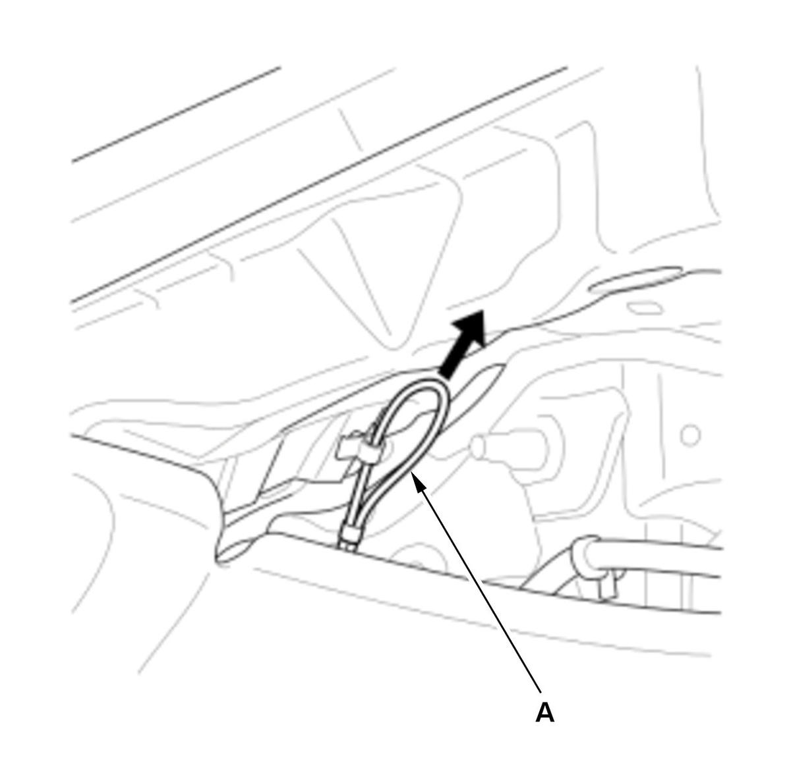
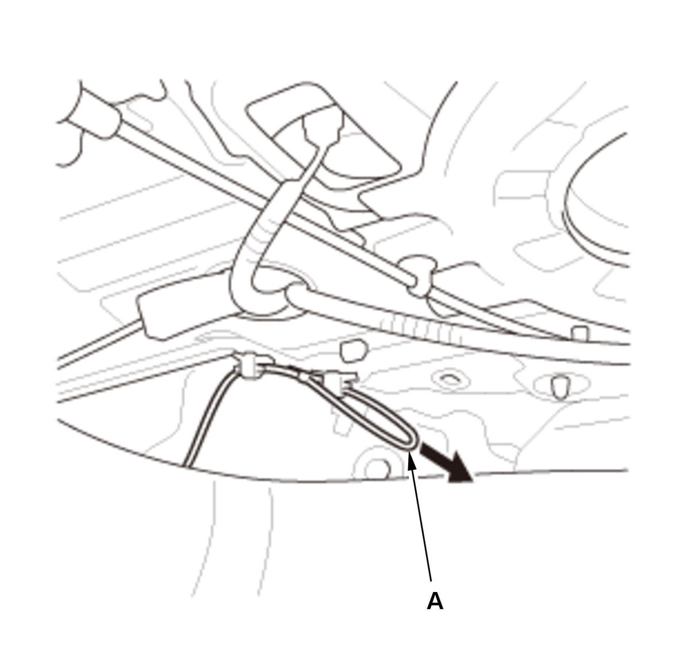

LEMON Manuals
: Even more car manuals for everyone: 1960-2025
Home
>>
Honda
>>
2016
>>
Civic LX, 4D Sedan, Automatic CVT Trans
>>
Repair and Diagnosis (Single Page)
>>
Accessories & Equipment
>>
Anti-Theft Systems
>>
Security System / Keyless Entry System - Gen Info & Troubleshooting
>>
Servicing
>>
Emergency Access to Fuel Fill Door Lock Actuator (2/4-door)
>>
Procedure
Emergency Access to Fuel Fill Door Lock Actuator (2/4-door): Procedure
Emergency Access to Fuel Fill Door Lock Actuator - Procedure
2-door


Courtesy of HONDA, U.S.A., INC.HONDA, U.S.A., INC.
4-door
Courtesy of HONDA, U.S.A., INC.HONDA, U.S.A., INC.
1. Pull the emergency access wire (A) by hand in the direction of the arrow to release the lock.